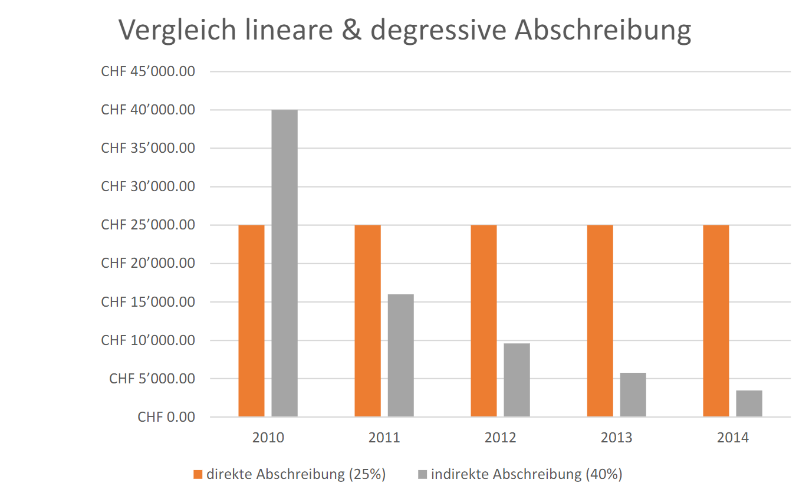

Jeder Geschäfts Inhaber musss mit Wertverlust (Abnutzung, Alter, neue Modelle etc.) an Anlagen rechnen. Diese werden jeweils Ende Jahr gebucht.Für die Buchung werden die Anlagekonten (Aktivkonto), das dazugehörende Wertberichtigungskonto und das Abschreibungen-Konto (Aufwandskonto)gebraucht.
Kaufpreis brutto (Rechnung des Lieferanten)
| - | Rabatt und/oder Skonto |
| - | Mehrwertsteuer (wenn Vorsteuer geltend gemacht werden kann) |
| ----------------------------------------------------------------------------------------------- | |
| = | Zahlungsbetrag |
| + | Transport, Installation der Anlage |
| ----------------------------------------------------------------------------------------------- | |
| = | Anschaffungswert |
Man setzt einen Prozentsatz zum Anschaffungswert eines Anlagevermögens.
Anschaffungswert: Der Betrag, was man für das Gerät bezahlt hat.
Bsp. Über 5 Jahre 20% vom Anschaffungswert (100'000 CHF)
Abschreibung: 20'000 CHF pro Jahr
Man schreibt immer den gleichen Prozentsatz des Buchwerts ab.
Buchwert: aktuelle Wert des Anlagevermögens.
Bsp. Über 5 Jahre 40% vom Buchwert (variabler Wert)
| Abschreibung | 1 Jahr | 40'000 CHF |
| 2 Jahr | 16'000 CHF | |
| ... | ||
| 5 Jahr | 28'640 (Restwert) |
Solange kein Restwert definiert wird, ergibt der Restwert nicht 0.
| Bsp. | Abschreibungen/ Fahrzeuge | 40'000 |
Man sieht nur Buchwert
| Bsp. | Abschreibungen/ WB Fahrzeuge | 40'000 |
| WB Fahrzeuge/ Fahrzeuge | 40'000 |
Durch die indirekte Verbuchung werden die gesamte Abschreibung und somit auch der Anschaffungswert des Anlagevermögens ersichtlich.
Ein Wertberichtigungskonto ist ein Minus-Aktivkonto, das heisst ein Wertberichtigungskonto wird in der Bilanz mit dem entsprechendem Aktivkonto verrechnet.
| FLL/ Fahrzeuge | 8'000 |
| A.o. Aufwand/ Fahrzeuge | 2'000 |
| FLL/ Fahrzeuge | 13'000 |
| Fahrzeuge / A.o. Ertrag | 3'000 |